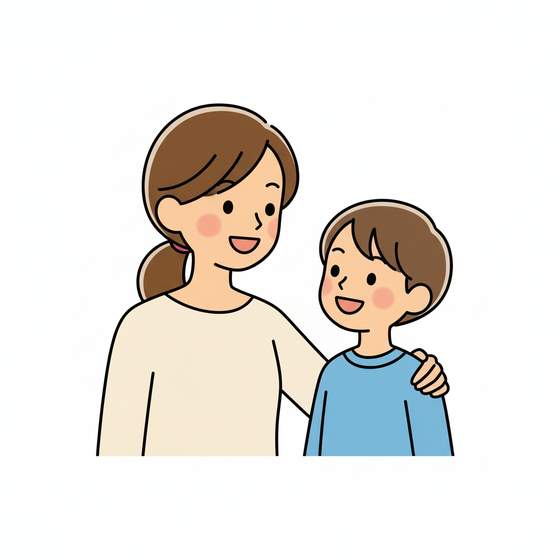
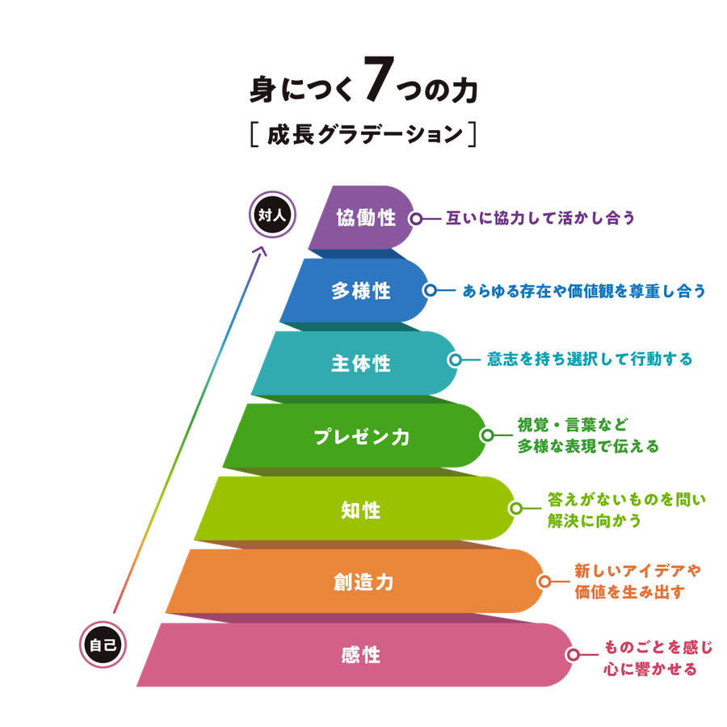
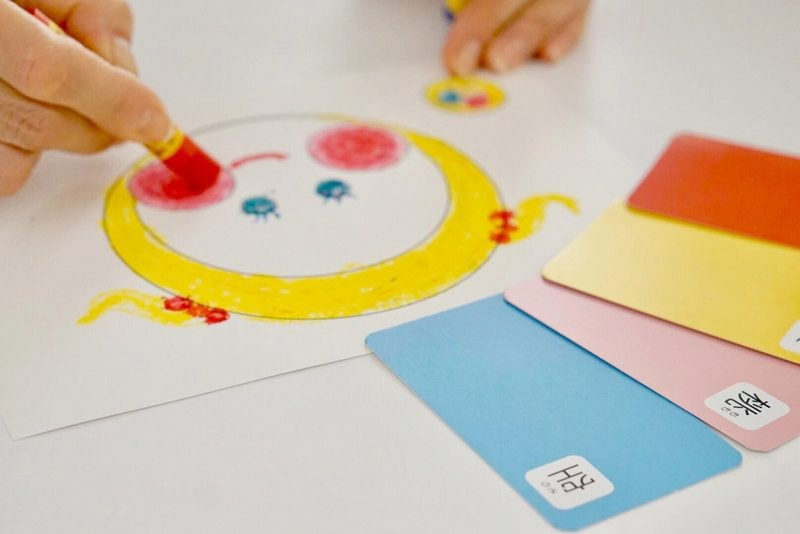
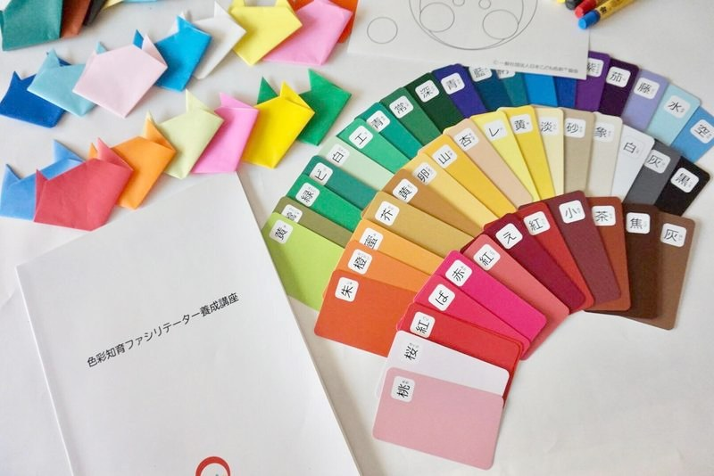
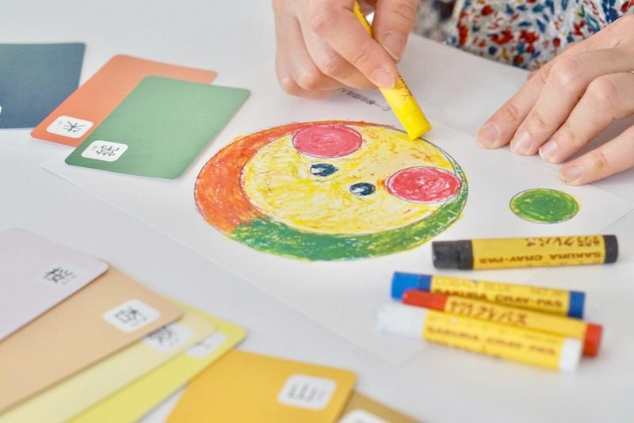
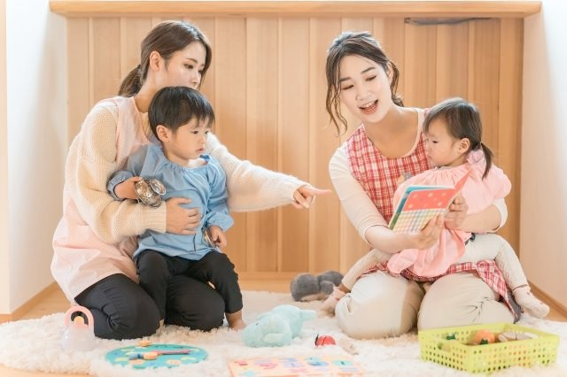
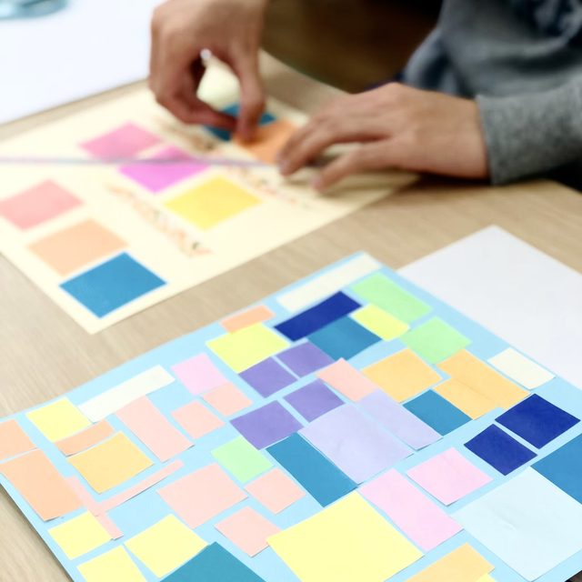
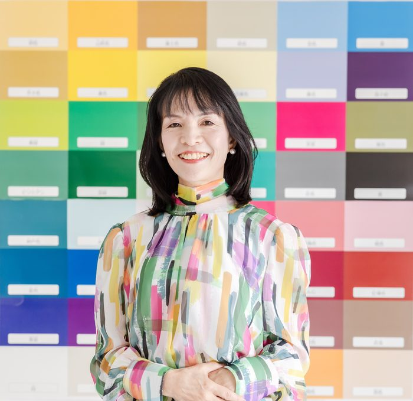
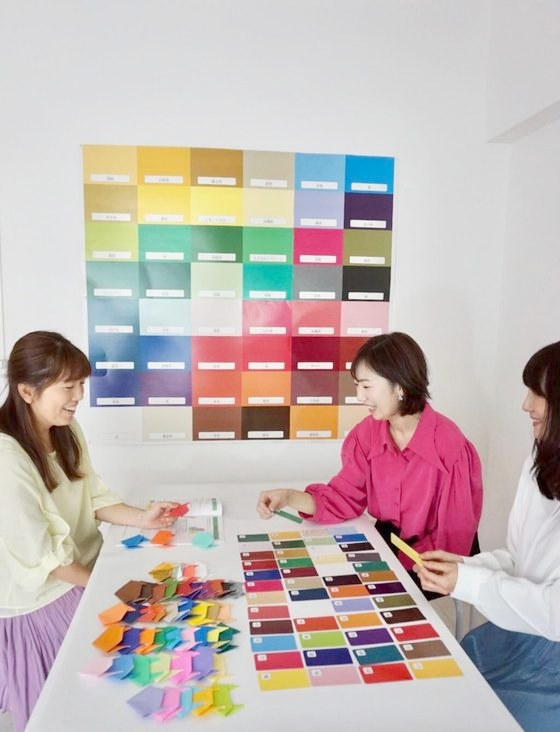

こんなこと、ありませんか？
「どうしてあんな言い方をしちゃったんだろう」と、子どもが寝たあとに思い返す。
ほめたいのに、「えらいね」「すごいね」しか出てこない。
叱りすぎるのも、甘やかすのも、なんだか違う気がする。
育児本やSNSを見るほど、何が正解かわからなくなる。

どれも、子どもを大切に思っているからこその迷いです。
あなたのせいではありません。
kashiko®メソッドの考え方
叱る・ほめる、
のあいだにある言葉がけ
いい・悪いの評価をつけずに、子どもの「見たまま」を言葉にして伝えます。
放っておくのでも、甘やかすのでもありません。子どもが「見てもらえている」と感じられる、あたたかい関わり方です。
色と言葉で、
ありのままを伝え合う
日本こども色彩協会が生み出した、ありのままを伝える言葉がけの方法です。色を使って気持ちや感覚を見える形にするので、言葉にするのが苦手な子どもも、大人も取り組めます。
色 × 言葉がけ × 学習法で、感情（ka）・視覚（shi）・行動（ko）に働きかける。脳科学・心理学・大脳生理学を基にした教育メソッドです。
学ぶことで、感性から協働性まで、7つの力を育てていきます。

受けたあと、こう変わります

① 毎日の会話が変わる
「どうしたの！」の代わりに、「見たまま」を伝えられるようになります。
② 子どもの様子が見えてくる
色を選ぶ様子から、その日の気持ちに気づけるようになります。
③ 仕事や活動にも広がる
保育・教育・福祉の現場や、ご自身の活動にも使えます。
講座を受けた方だけが
手にできる、特別なかるた

こんなふうに使えます
- 「今日の気持ちは、どの色？」と選んでもらう
- 色を1つ決めて、「その色の仲間だと思う言葉は？」と探す
- 言葉にしづらい気持ちを、カードで伝えてもらう

このかるたは、講座の受講者だけにお渡ししています。
家庭から、
仕事の現場まで
色と言葉を使うので、年齢や立場を選ばず、いろいろな場面で使えます。


受講した方の、
実際の声
講座後の振り返りシートより
「特別な道具もなく、すぐに実践できそう！と感じました。」
子育て中の受講生「『見たまま伝える』は簡単そうで難しいと感じました。これまで自分がどのように声かけしていたのか振り返りながら受講できたので、どこを改善していったら良いか見当がつきました。」
保育の現場で働く受講生「ポジティブな感情をあらわすことばがスッと出てこなかったので、増やしたいし、子どもにバリエーション豊かなことばをつかってあげたいなと思いました。」
こども園で働く受講生「全てのワークがスムーズに行えたのは、れもんさんがかしこ式で接してくれているからだと感じました。この安心して本音で発表できる関係性を、家族をはじめとした大切な人たちと築いていきたいです。」
家族との関わりに活かしたい受講生「初日と受講後で、3つの質問についての捉え方の姿勢が自分自身で変わったことに驚いています。受講してよかったです。」
子育てと仕事に活かしたい受講生「思い切って講座を受講して良かったと思える内容でした。少しずつ自身の生活に取り入れていきたいと思っています。」
家庭で取り入れたい受講生学びの4ステップ
ハミング呼吸
脳と心を整える
ハミング呼吸で心身リラックス。五感を研ぎ澄まし、学ぶための準備をします。
インプット
好奇心のスイッチを入れる
五感を刺激し、好奇心を呼び覚まします。新たな発見が創造力を育み、発想を広げます。
アウトプット
自由に表現し、分かち合う
色や言葉で自由に表現。発表で表現の幅が広がり、互いの価値観を尊重する心を育みます。
ふりかえり
気づきを力に変える
活動や感情を丁寧にふりかえる習慣により、客観的分析力が養われ、次の学びへ繋げます。
日程と受講方法
ご希望の日をご相談ください
対面は京都・滋賀・大阪・奈良など
1日集中（2日分を続けて）など、受講時間もご相談いただけます。
講師
はじめまして、
藤本れもんです
kashiko®メソッドの講師をしています。このメソッドを知ったとき、「こんな言葉がけがあったんだ」と感動しました。
元不登校だった長男との関わりの中でも、見たままを伝える言葉がけに、何度も支えられました。約1年半で学校に戻った今、「子どもの“見たまま”を受け止める言葉がけ」をお伝えしています。
教育は、お金をかけすぎなくても、今日から身近な言葉がけで始められると思っています。
日本こども色彩協会

kashiko®メソッドは、日本こども色彩協会オリジナルのメソッドです。
一般社団法人日本こども色彩協会
代表理事 齊藤美雪
学んで終わり、
にしません

日々の実践や、迷ったことを、受講生どうしで共有できます。
学び続けられる場があるから、「習ったけど使えていない」で終わりません。
受講料
kashiko®かるた（受講者限定）
受講生専用コミュニティ
お支払い：銀行振込・クレジットカード
「教育にお金をかけすぎない」を大切にしています。まずは無料の体験ワークで、雰囲気を確かめてください。
無料の体験ワークへよくある質問
Q. 子どもに関わる仕事をしていなくても大丈夫？
はい。育児中の方や、日常の会話を変えたい方が多く受講しています。
Q. すぐ日常で試せますか？
はい。学んだ言葉がけは、その日から身近な会話で試せます。
Q. 無料の体験ワークと、基礎講座の違いは？
体験ワークは、kashiko®メソッドの入口を約90分で体験できます。基礎講座では、考え方からかるたの使い方、日常での活かし方まで学びます。
Q. 子育て中で時間が限られていますが、6時間で身につきますか？
kashiko®メソッドは体系化されたメソッドなので、効率よく学習いただけます。また、受講後のコミュニティで継続的にサポートしますので、ご安心ください。
Q. オンラインでも、対面と同じ内容を学べますか？
はい。オンライン・対面ともに同じカリキュラムで進行します。オンラインでも充分に学習いただけるよう配慮しています。
Q. 仕事や活動に活かせますか？
育児・保育・教育・福祉の現場で、日常の関わりに取り入れている方がいます。活動として広げたい方は、体験ワークでご相談ください。
「見たままを伝える」は、
今日からできる小さな一歩です。